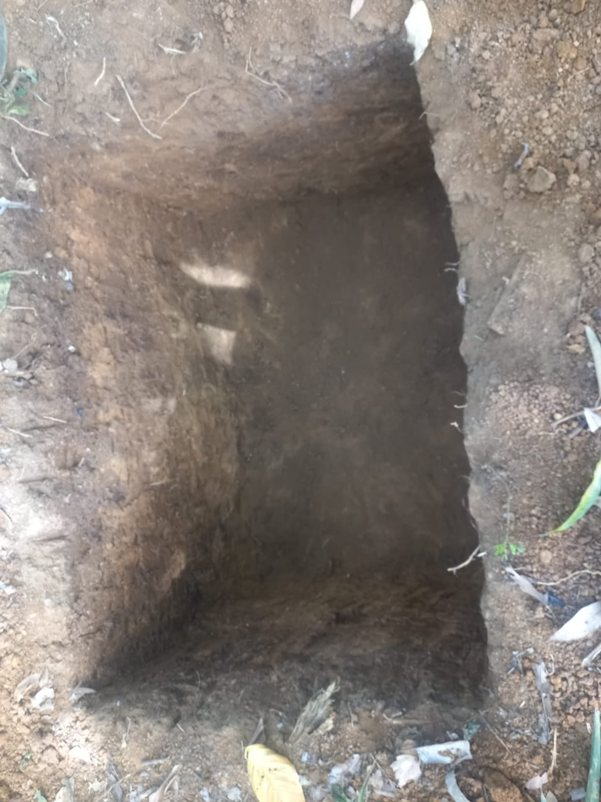
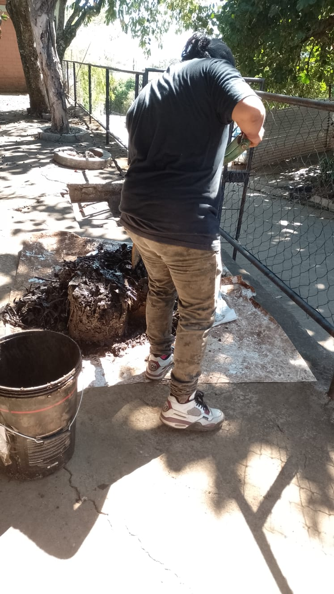
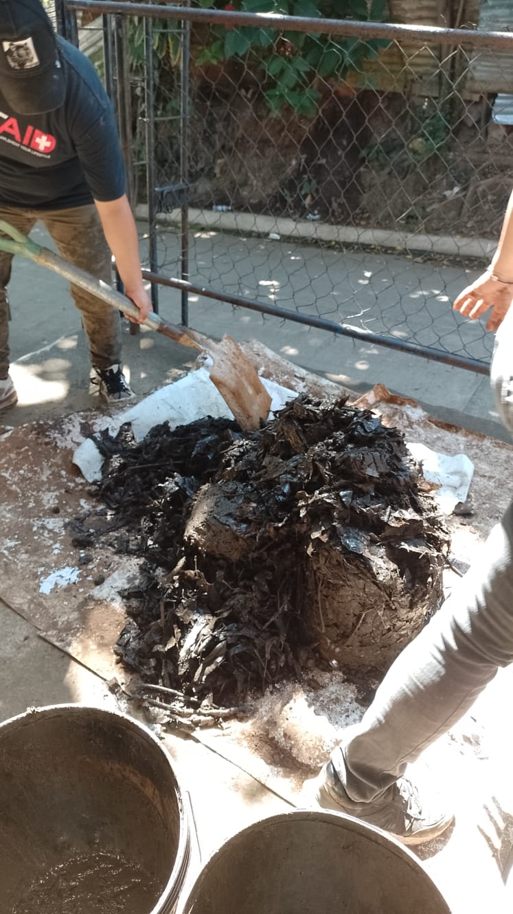
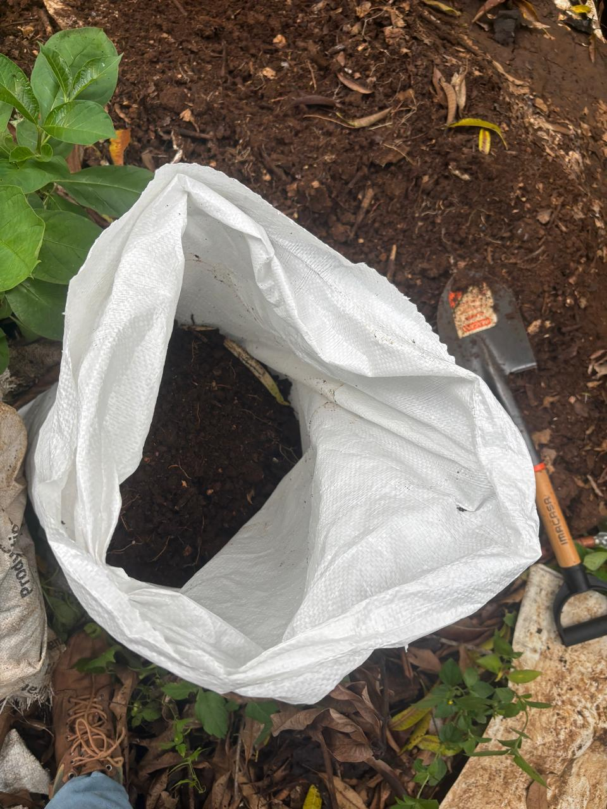
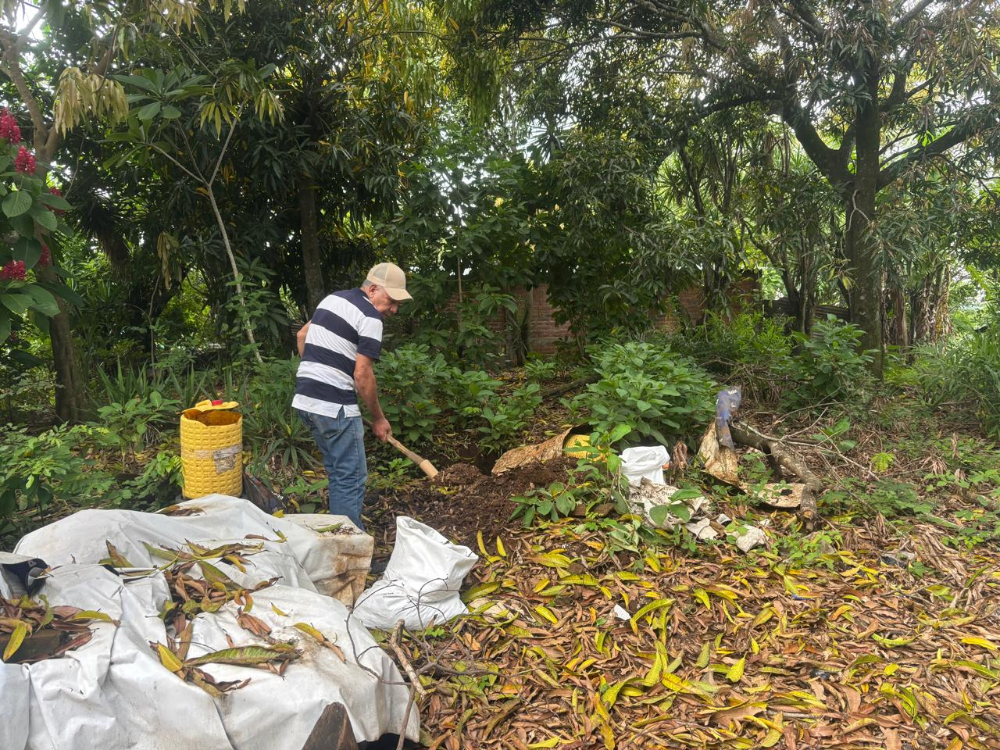
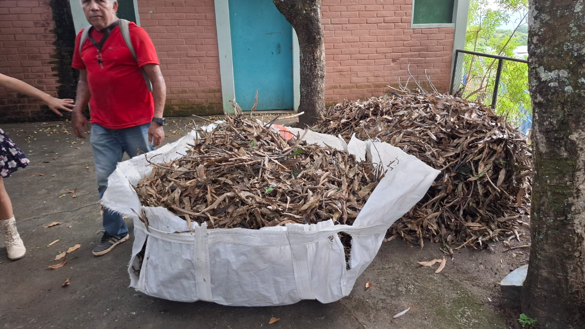

Recolección
Recolección y acopio de hojas secas y otros materiales vegetales disponibles en el entorno.
Una iniciativa de Fundación El Umbral del Oasis que busca aprovechar hojas y otros residuos vegetales de la comunidad mediante compostaje, transformando materiales disponibles localmente en materia orgánica aprovechable para el suelo.
En la comunidad Palo Negro, distrito de Coatepeque, Santa Ana Este, existe disponibilidad de hojas secas y otros residuos vegetales que pueden aprovecharse en lugar de desecharse.
A partir de esta realidad surge Tierra Fértil, una propuesta para recolectar estos materiales, manejarlos mediante compostaje y observar su transformación hasta obtener materia orgánica útil para el suelo.

El trabajo se desarrolla por etapas. Cada una se registra para documentar el avance, evaluar la experiencia y generar aprendizajes que permitan mejorar el proceso.
Recolección y acopio de hojas secas y otros materiales vegetales disponibles en el entorno.
Preparación del espacio y organización del material antes de iniciar el proceso.
Manejo de los residuos vegetales para favorecer su descomposición progresiva.
Seguimiento del cambio del material hasta obtener una materia orgánica más estable.
Recuperación del material obtenido para valorar su utilización en suelo y experiencias productivas.
Estas imágenes forman parte del registro realizado durante las actividades del proyecto. La documentación permite conservar evidencia de las condiciones iniciales, el trabajo realizado y los cambios observados durante el proceso.





Tierra Fértil también representa una oportunidad para compartir conocimientos sobre el manejo de residuos orgánicos, el cuidado del suelo y el aprovechamiento de los recursos disponibles en la comunidad.
El trabajo práctico permite observar directamente cada etapa, identificar dificultades y adaptar el proceso a las condiciones reales del lugar.
Una parte fundamental del proyecto es conservar evidencia del trabajo realizado. Las fotografías permiten observar las diferentes etapas y respaldar el seguimiento de las actividades desarrolladas.

Los registros audiovisuales complementan la evidencia fotográfica y permiten mostrar de una manera más directa las actividades realizadas durante el desarrollo de Tierra Fértil.
Registro de las actividades iniciales del proyecto.
Trabajo realizado con el material orgánico.
Evidencia audiovisual del desarrollo de las actividades.
Fundación El Umbral del Oasis registra el desarrollo de Tierra Fértil mediante fotografías, videos y observaciones de campo. Esta evidencia permite dar seguimiento al trabajo realizado, identificar oportunidades de mejora y conservar un registro de la experiencia desarrollada en la comunidad.
← Volver al sitio principal